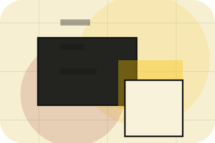
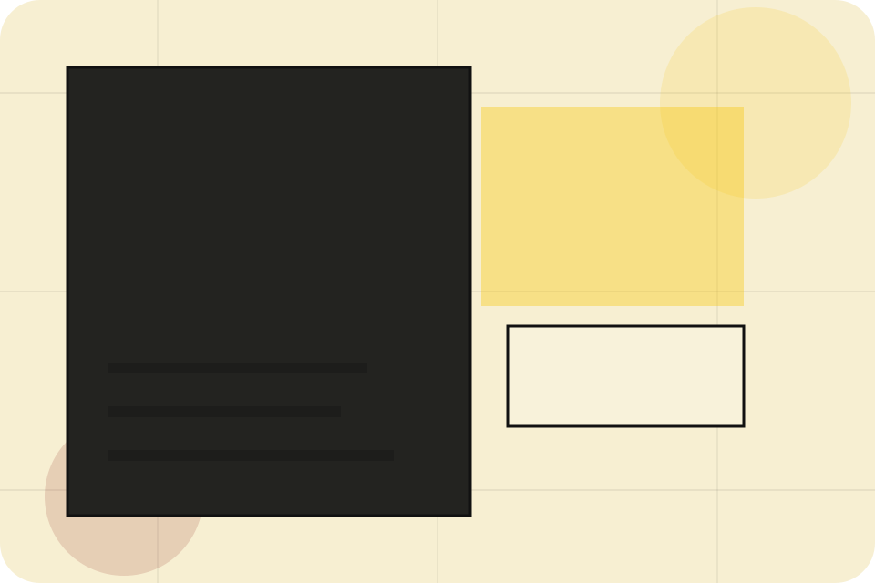
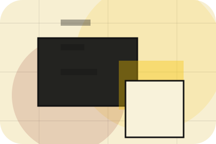
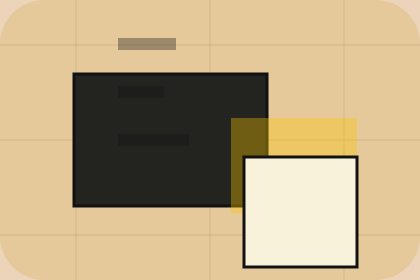

Question
Rights gives the page a specific angle instead of repeating the navigation label.
FAQ / 01
FAQ opens as a clear publishing decision hub: what Index offers, who it helps, why it matters, and which route to take first.
The first screen combines positioning, proof, primary action, and fast internal navigation, so people can act immediately or compare the rest of the faq route with context.
Editorial masthead hero
Select the closest route and Index keeps the next step, proof, and follow-up expectation aligned with authority and discovery.

FAQ / 02
Access handles buying doubts directly so visitors can understand timing, fit, limits, and the safest next step.
Answers are short by design: enough to remove hesitation, not so much that the page turns into documentation before the visitor can act.
Explore FAQAccess gives the page a specific angle instead of repeating the navigation label.
The column article cards show what to compare, what to avoid, and what matters most for publishing, information & knowledge platforms visitors.
The final cue points to a useful internal route so the section keeps the journey moving.
FAQ / 03
Sources handles buying doubts directly so visitors can understand timing, fit, limits, and the safest next step.
Answers are short by design: enough to remove hesitation, not so much that the page turns into documentation before the visitor can act.
Explore FAQIndex structures sources around question, answer, and a clear next route so visitors can compare the block quickly before they subscribe.
SubscribeFAQ / 05
Submissions handles buying doubts directly so visitors can understand timing, fit, limits, and the safest next step.
Answers are short by design: enough to remove hesitation, not so much that the page turns into documentation before the visitor can act.
Explore FAQSubmissions gives the page a specific angle instead of repeating the navigation label.
The column article cards show what to compare, what to avoid, and what matters most for publishing, information & knowledge platforms visitors.

The final cue points to a useful internal route so the section keeps the journey moving.
FAQ / 06
Corrections handles buying doubts directly so visitors can understand timing, fit, limits, and the safest next step.
Answers are short by design: enough to remove hesitation, not so much that the page turns into documentation before the visitor can act.
Explore FAQCorrections gives the page a specific angle instead of repeating the navigation label.
The column article cards show what to compare, what to avoid, and what matters most for publishing, information & knowledge platforms visitors.
The final cue points to a useful internal route so the section keeps the journey moving.
FAQ / 07
Accounts handles buying doubts directly so visitors can understand timing, fit, limits, and the safest next step.
Answers are short by design: enough to remove hesitation, not so much that the page turns into documentation before the visitor can act.
Explore FAQAccounts gives the page a specific angle instead of repeating the navigation label.
The column article cards show what to compare, what to avoid, and what matters most for publishing, information & knowledge platforms visitors.
The final cue points to a useful internal route so the section keeps the journey moving.
FAQ / 08
Support explains the practical scope, best-fit situations, and expected outcome so publishing visitors can compare options without decoding jargon.
The section keeps the offer concrete: what is included, who it is best for, what decision it supports, and which linked route gives the deeper detail.
Open ContactIndex structures support around best fit, what changes, and a clear next route so visitors can compare the block quickly before they subscribe.
SubscribeFAQ / 09
Contact handles buying doubts directly so visitors can understand timing, fit, limits, and the safest next step.
Answers are short by design: enough to remove hesitation, not so much that the page turns into documentation before the visitor can act.
Explore FAQIndex structures contact around question, answer, and a clear next route so visitors can compare the block quickly before they subscribe.
SubscribeEditorial masthead hero
Select the closest route and Index keeps the next step, proof, and follow-up expectation aligned with authority and discovery.
FAQ / 10
Index closes the faq route with a clear action, a quick reminder of the value, and a low-friction way to subscribe.
Visitors who are ready can use the primary action. Visitors who are still comparing can scan the section links, proof, and support routes before they subscribe.
SubscribeThe final block keeps the choice simple: act now, compare one more proof route, or send enough detail for a focused response.
Subscribeauthority and discovery
A knowledge platform with magazine columns, archive search, author cards, and newsletter conversion. FAQ ends with a direct path to subscribe, plus enough context for visitors who still need to compare.

SubscribeInformation is provided for planning and should be reviewed for the final client, location, and operating rules.